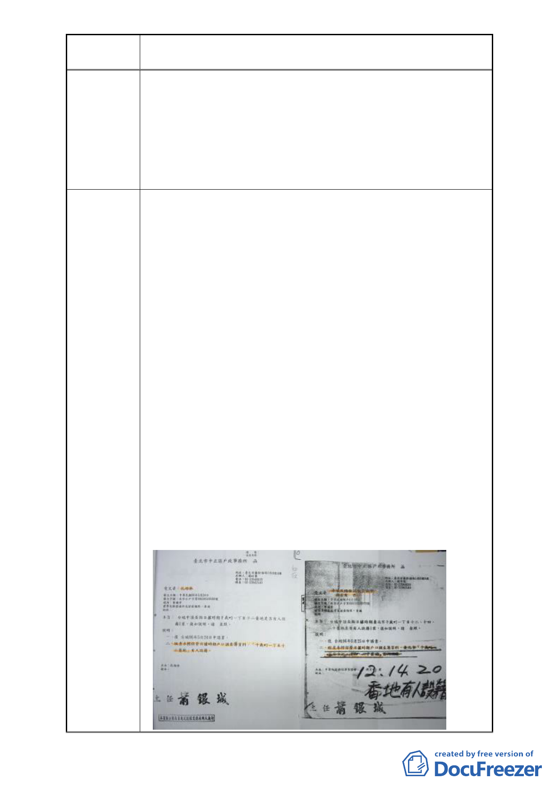

案名
建議辦法
變更臺北市中正區南海段一小段 719、724 地號等 2 筆停車場
用地為廣場用地細部計畫案
活困境所衍生的社會問題，這樣的政府令人不勝唏噓，
深覺不公平亦不合理。
（5）本案是一個極具爭議性的公共設施用地，歷經一甲子爭
議，多次變更，政府之政策與規劃仍無法使當地居民
認同，希望有為之政府能親聽居民心聲，了解居民需
求，兼顧都市發展及原住戶居住與生存權益，將本案
專案專簽處理。
1.中正區公園及廣場用地已經約有 501891 平方公尺！根本不
需要再做廣場用地之規劃！
政府編列 5300 多萬預算蓋廣場，卻忽略十幾戶在此居住
五、六十年市民的生存與居住權益，造成無家可歸與面臨
生活困境的社會問題，令人不勝唏噓，深覺不公平亦不合
理。希望政府應通盤檢討、重新審慎規劃！
2.司法保障人民居住及生存權益，政府任何施政及建設，應
該把人民生計擺第一，請求市政府以“專案專簽”處理本
案。
方案一：比照廣東大樓，將地目變更，進而規劃多目標商用
廣場，讓原住戶優先承購「就地安置」。一方面可以
符合法令；另一方面可以兼顧公平、合理、公正的
原則，保障原住戶居住及生計之權益。
方案二：將本案由交通捷運局主辦，結合捷運中正紀念堂 3
號出口統一管理，優先讓原住戶承購「就地安置」。
並依“都市計畫公共設施用地多目標使用辦法”之
規定做多目標使用，聯合開發商業廣場。
以上方案可促進都市平衡發展、整肅市容、繁榮地方，
一舉數得，達成多贏、多目標之使用目的。
建請市政府重視陳情人「就地安置」之訴求，專案處理
本案。
- 13 -